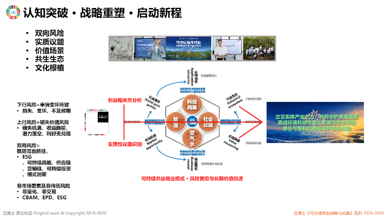

系统性鸟瞰式风险危机管理框架
这一方法要处理什么
从问题源头到危机恢复，动态管理风险链和影响面。《可持续商业战略与实践》，第 112 页
如何理解与运用这一方法
这一方法为何被提出
企业需建立覆盖识别、预防、处理、恢复和完善的全生命周期风险危机体系。《可持续商业战略与实践》，第 112 页
风险既包括损失，也包括价值错失
下行风险关注损失、事故、违规和危机；上行风险关注错失机遇、收益跑输和潜力未兑现。两类风险需要放在同一鸟瞰视角下识别。可持续商业范式下的ESG管理体系，2026-10-28，幻灯片13 · 双向风险
上行风险必须对应可验证的市场机会、能力资源和经营路径，不能把所有未实现愿望都归类为风险。可持续商业范式下的ESG管理体系，2026-10-28，幻灯片13 · 价值错失风险边界
管理上行风险需要三项组织能力
前瞻扫描负责持续识别政策、技术、市场与社会环境趋势，并判断机会是否与企业四要素和经营路径相匹配。没有证据基础的愿望不能被包装为上行风险。绿蓝交响：红树林生物多样性与气候韧性的科学解码，2026-11-04，文末双向风险部分 · 识别与前瞻扫描
柔性储备与能力预埋让企业在窗口出现前保留低成本选择，包括模块化产能、可扩容供应链、人才与资质储备、预研技术和数智底座；动态资源切换则在条件成熟时把资源从成熟业务迁移到新增长曲线。绿蓝交响：红树林生物多样性与气候韧性的科学解码，2026-11-04，文末双向风险部分 · 柔性储备与动态资源切换
从问题到恢复是一条连续风险链
鸟瞰式管理先把单个事件放回完整链条：一个经营问题可能发展为风险，风险在多方作用下可能越过阈值成为危机，危机处置之后还需要恢复与制度修复。任何一段缺位，都可能让相似问题再次出现。《可持续商业战略与实践》，第 114 页
使用这个框架时，不要只列风险清单。还要明确风险之间的因果关系、内部纵向责任、外部横向影响、时间节点和升级条件，最后把监测、预防、响应和复盘连成持续运行的机制。《可持续商业战略与实践》，第 121 页
构成维度
- 连续性思维
把问题、风险、危机、处置和恢复看成连续演化的过程，而不是彼此孤立的事件。管理者需要持续观察风险因素如何相互影响、叠加和扩散，并把管理动作前移。
书中说明 · 第 112 页 - 因果性思维
从表面事件继续追问触发条件、制度缺口、行为诱因和扩散路径，区分直接原因、深层原因与放大因素。只有因果链被看清，预防措施才不会停留在事后补救。
书中说明 · 第 114 页 - 类比性思维
把当前问题与相似行业、地区、利益相关方冲突或历史危机进行对照，识别共同模式和差异条件。类比用于拓展风险想象力，但最终判断仍需回到本企业的业务、能力和情境。
书中说明 · 第 113 页 - 横纵—内外因子矩阵
纵向梳理集团、区域、运营地、部门和岗位的内部责任，横向观察监管、客户、供应商、媒体、社区和公众的外部作用。矩阵把影响因子与议题节点、时间节点和应对措施联系起来，支持动态研判。
书中说明 · 第 121 页 - 前瞻扫描与机会识别
持续使用趋势雷达、政策预判、技术路标和场景推演识别可能出现的市场窗口、社会环境需求与价值机会，并把上行风险纳入全面风险管理。扫描结果必须回到企业四要素和可验证经营路径，不能把所有愿望都定义为机会。
绿蓝交响：红树林生物多样性与气候韧性的科学解码，2026-11-04，文末双向风险部分 · 识别与前瞻扫描 - 柔性储备与能力预埋
围绕可验证机会提前准备模块化产能、可扩容供应链、人才储备、前置资质、预研技术和可复用数智底座，并用小规模试点保留进入新场景的资格。储备规模需要与机会概率、资源承受力和退出条件相匹配。
绿蓝交响：红树林生物多样性与气候韧性的科学解码，2026-11-04，文末双向风险部分 · 柔性储备与能力预埋 - 动态资源切换
建立跨业务、跨部门的资源快速调配通道，在风险与机会变化时把资金、人才、产能、供应链和数据能力从成熟业务有序迁移到新增长曲线。切换必须设定触发阈值、责任人和对存量业务的连续性保护。
绿蓝交响：红树林生物多样性与气候韧性的科学解码，2026-11-04，文末双向风险部分 · 动态资源切换机制
《可持续商业战略与实践》，第 112 页
实施阶段
- 问题画像
先说明发生了什么、涉及哪些经营活动和利益相关方、影响范围多大，以及企业当前掌握了什么和仍不知道什么。问题画像的作用是建立共同事实基础，避免一开始就把问题定性成单一原因。
书中说明 · 第 114 页 - 风险识别与评估
识别风险来源、触发条件、发生可能性、影响程度和相互传导关系，同时判断对战略目标、运营连续性和利益相关方的影响。评估不仅看损失，也要识别可能错失的市场与价值机会。
书中说明 · 第 112 页 - 监测预防与化解
为关键风险设置责任人、预警信号、监测频率和升级规则，并通过制度、流程、能力和伙伴协同降低风险发生概率。能够提前化解的问题，不应等到危机阶段再处理。
书中说明 · 第 114 页 - 危机准备与处理
对可能越过阈值的风险预先准备决策机制、信息通道、资源调度和利益相关方沟通方案。危机发生后，需要在控制损害的同时保持事实核验、责任清晰和内外行动一致。
书中说明 · 第 113 页 - 恢复与完善
危机处置结束并不代表管理闭环完成。企业还需修复业务与关系、复盘根因和响应效果，把经验转化为治理、流程、数据、能力与文化的改进。
书中说明 · 第 114 页
《可持续商业战略与实践》，第 112 页
相关图示

来源与定位
企业需建立覆盖识别、预防、处理、恢复和完善的全生命周期风险危机体系。
鸟瞰式矩阵、情景分析、预警、协同与复盘共同管理风险敞口。
补充风险既要防止事情变坏，也要识别可验证的价值错失。
补充管理上行风险所需的三项组织能力及其使用边界。
微信公开版提供三项组织能力的公开访问来源。